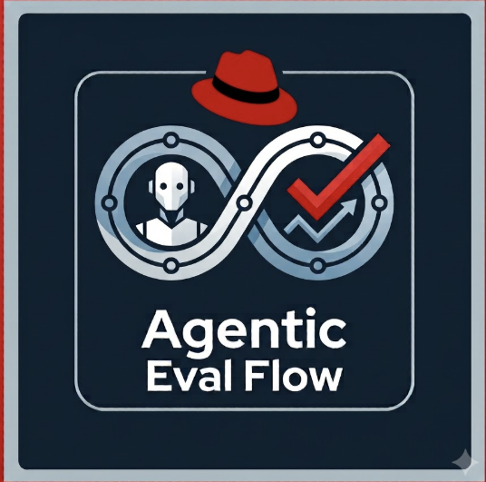

1
Prepare
Clone, validate structure, generate missing test artifacts

Tekton-orchestrated pipeline on OpenShift that evaluates skills, agents, and MCP servers through A/B testing, statistical analysis, and multi-gate certification.
Made at Red Hat
Architecture
Stages run the work. Gates decide the outcome — one scorecard, one certification decision.
Clone, validate structure, generate missing test artifacts
Pre-trial gates — security scan and LLM quality review
Engine trials — compare variants or score a single run — plus behavioral edge cases
Gates merge here into scorecard + certification
Persist results to PostgreSQL, MinIO, and MLflow
Multi-gate scorecard
Each gate can block, warn, or be disabled. Combine with all_pass, any_pass, or weighted.
Prompt injection, exfiltration, policy findings
LLM review for coherence, coverage, clarity
Single or A/B results — uplift, pass rates, significance
Edge-case and adversarial robustness trials
Choose the right engine for your artifact type and evaluation needs.
| Engine | Evaluates | Mode | Isolation |
|---|---|---|---|
| Agent-Eval-Harness (AEH) | Agents, skills | Judge-based evaluation + A/B (treatment vs control) | OpenShift pods |
| Agent-Skill-Eval (ASE) | Skills | A/B (LLM-as-judge) | No container |
| A2A | A2A-protocol agents | A/B (treatment vs control) + Single Eval | Containerized |
| MCPChecker | MCP servers | Task-based verification | No container |
Kick off evaluations from the systems you already use. Tekton EventListeners accept webhooks for pull requests and image pushes — sources and filters are configurable per deployment.

PR and push webhooks on submission or config repos. Opens, updates, and merges can start a PipelineRun.

Merge-request and push hooks with the same EventListener pattern — wire your GitLab project to the OpenShift route.
Repository notifications on image push. Evaluate a newly published tag without a manual trigger.
Every pipeline run is tracked end-to-end — from gate scores to LLM token usage.
PostgreSQL tables: scorecards, gate results, certifications, and observability metrics. Query evaluation history with simple SQL.
Real LLM token counts captured per pipeline run. Track prompt/completion tokens, model usage, and estimated costs.
Auto-logs experiments, metrics, tags, and artifacts. One experiment per submission, run comparison out of the box.
Reports, scorecards, security scans, and debug artifacts stored with full provenance.
Each variant runs N configurable repetitions (default 20 per arm — treatment + control). Stats are computed across those trials so noisy single runs don’t decide the gate.
Configurable via n-trials / metadata. Same task is executed N times per variant to estimate pass rate and mean reward with real variance.
Compares mean reward between arms when sample sizes or variances differ — stronger than a single-run delta, especially when N is modest.
Tests whether pass/fail counts differ significantly between treatment and control (good fit for binary outcomes at typical N).
Reports treatment vs control pass rates, uplift gap, mean reward, and confidence metrics used by the evaluation gate.
Submit an AEH package to OpenShift. Pick the flow that matches what you are evaluating.
Score a skill end to end (SKILL.md under test).
metadata.yaml and eval.yaml (can be auto-generated)cases/eval_engine: aeh)my-skill-eval/
metadata.yaml # eval_engine: aeh
eval.yaml # skill, judges, thresholds (can be auto-generated)
skills/
my-skill/
SKILL.md
cases/
case-001/
input.yaml
annotations.yamlScore whether an agent can navigate and use docs/APIs (prompt / agentic-docs mode).
metadata.yaml and eval.yaml (prompt/docs config; can be auto-generated)cases/my-agent-eval/
metadata.yaml # eval_engine: aeh
eval.yaml # prompt / docs-focused config (can be auto-generated)
cases/
case-001/
input.yaml # agent task / question
annotations.yamlSkill evaluation — commit or open a PR on the submissions repo. GitHub / GitLab webhooks start the CI pipeline (security + quality gates included). Use aeh-mode: single or pairwise for A-only vs A/B.
git clone https://github.com/RHEcosystemAppEng/skill-submissions.git
cp -r my-skill-eval submissions/
git add submissions/my-skill-eval && git commit -m "Submit skill eval" && git pushAgent evaluation — two trigger styles (configurable):
eval.yaml (full CI path when configured)
Evaluation runs, trials, scorecards, gate results, certifications, observability metrics — all queryable.

report.json, report.md, scorecard.json, security scans, debug artifacts — full provenance per run.
Experiment tracking with metrics, parameters, tags, and artifacts. Compare runs across submissions.